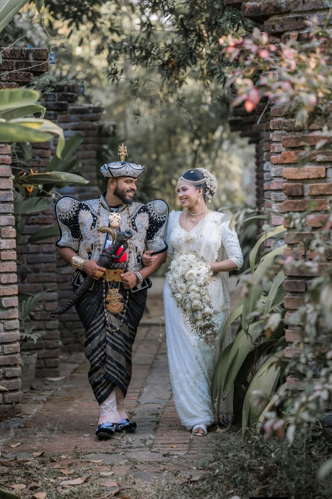
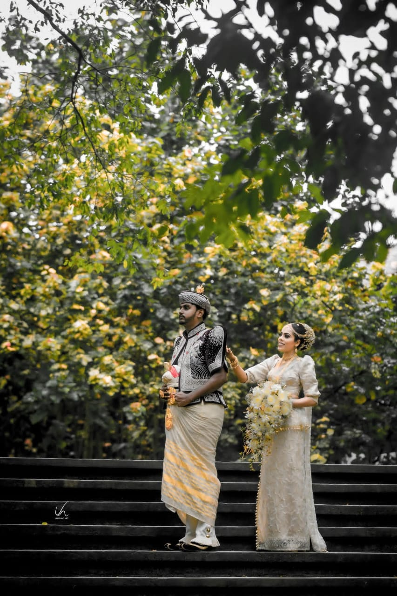

Your story leads.
Your tastes and priorities shape the celebration, from the atmosphere to the smallest meaningful detail.
SRI LANKA · A CELEBRATION OF YOU
The traditions you treasure. The people you love. A wedding that feels like home, and a little like a dream.
ආදරයෙන් සැලසුම් කළ ඔබේ දිනය.

SOMEWHERE BEAUTIFUL TO SAY “WE DO”
A city you love. A budget that feels right.
Let’s explore the possibilities.
THE HEART OF SERANDIB
A wedding brings together more than beautiful details. It holds two people, two families, and the things that matter most to them.
We begin there. With what you love, the traditions you want to honour, and how you want the day to feel. Then we shape a planning journey around your priorities, with clear conversations and thoughtful decisions along the way.
How we’ll work togetherYour tastes and priorities shape the celebration, from the atmosphere to the smallest meaningful detail.
A shared plan, an agreed scope and decisions made with you. So you know what comes next.
Space for family, faith and personal expression, without assuming what your wedding should be.
THE SERANDIB EXPERIENCE
Choose the support that suits where you are.
We’ll define the details together before you commit.
01 / FROM THE FIRST IDEA
For couples who want a thoughtful partner from the first conversation to the final farewell.
02 / BRINGING IT TOGETHER
You’ve made a start. Let’s bring the remaining pieces into one beautifully considered plan.
03 / BE PRESENT, COMPLETELY
For couples who have their plans in place and want support bringing them to life on the day.
Every celebration is different. Your proposal will set out our fee, agreed services and any exclusions. Venue and supplier costs are discussed separately.
SRI LANKA, BEAUTIFULLY
Perhaps it’s an ocean breeze, a candlelit ballroom, or a garden with room for everyone you love. The setting should feel as personal as the celebration.
Imagine a coastal celebration with an unhurried atmosphere, a sunset gathering and dinner beneath the stars.
THOUGHTFULLY PLANNED
We’ll discuss an indoor weather alternative, guest comfort, travel between locations and the right timing for your ceremony.
These settings are starting points for your ideas. We’ll explore real venues, practical needs and a weather alternative together.

MEANING IN EVERY MOMENT
From a Poruwa ceremony or Hindu wedding rituals to a church celebration, Muslim wedding, or a day that brings different traditions together: we start by listening. You, your families and your chosen officiants guide what is meaningful and appropriate.
We’ll talk through ceremony timings, attire changes, food preferences, guest needs and the space each part of your celebration deserves.
Tell us what matters to youFROM HELLO TO “WE DO”
Tell us about the two of you, your ideas, your date and what matters most. It’s a conversation, not a commitment.
We shape a proposal around your priorities, with the scope, planning fee and next steps explained.
Once we agree to begin, we build the timeline and bring decisions to you in manageable stages.
With the agreed coordination plan in place, you have more space for your people and your celebration.
A PERSONAL BEGINNING
We’re Chami and Levi, the couple behind Serandib Wedding Planners. We’re building Serandib around a simple belief: a wedding should feel deeply personal, and the experience of planning it should feel cared for.
Our focus is entirely on celebrations in Sri Lanka. Our starting point is always you. Your proposal will identify your planning contact, responsibilities and agreed scope before you book.
Chami & Levi
FOUNDERS, SERANDIB WEDDING PLANNERSBEFORE WE BEGIN
No. You can begin with a rough season, a few ideas, or simply a sense of how you want the day to feel. Tell us what is decided and what is still open.
Our planning fee depends on the agreed scope and complexity of your celebration. After we understand your plans, we’ll outline the fee and inclusions in a personalised proposal. Your overall wedding budget and supplier payments are separate.
If you live overseas and are celebrating in Sri Lanka, tell us where you’re based. We can discuss remote planning, time zones and which decisions may need an in-person visit.
Absolutely—tell us which customs, beliefs and family wishes matter to you. We’ll discuss how to coordinate them respectfully with your families and chosen officiants.
We’ll review your message and discuss a suitable time to talk. A consultation helps us understand your needs and whether we’re the right fit. Your date is only reserved once the booking terms are agreed.
YOUR STORY STARTS HERE
A few details are all we need to begin.
You don’t have to have it all figured out.
Prefer a simple hello? Message us directly.
A PERSONAL FIRST CONVERSATION
Tell us your date, your guest count and what matters most. We’ll reply within 24 hours to discuss the next step.
Request a consultationserandib.enquiries@gmail.comAn enquiry is not a confirmed appointment or wedding booking. We agree those details with you personally.